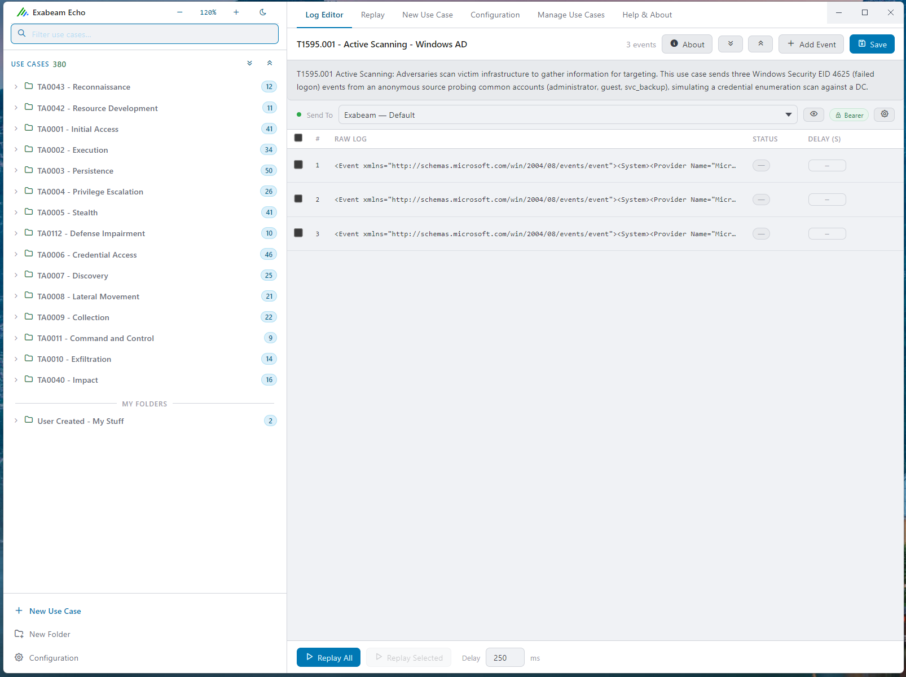
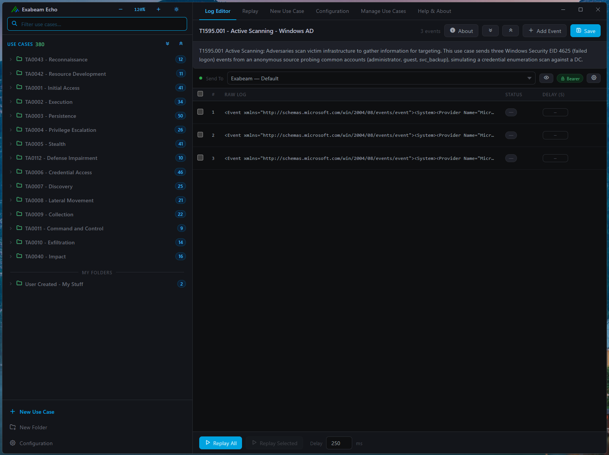

A desktop tool for replaying realistic, MITRE ATT&CK-tagged security event log use cases against an Exabeam Webhook Collector — validate correlation rules, test parsers, and demonstrate detections without live infrastructure or a real attack.
Free to download and use · verify the download · usage terms · all releases


Echo's own Log Editor — pick a use case, review the raw events, hit Replay.
Realistic, vendor-accurate log samples spanning Windows, AWS, Azure, GCP, M365, Google Workspace, Okta, Duo, and more — tagged by MITRE ATT&CK tactic. Nothing to author yourself.
Replay All, Replay Selected, or run a whole tactic folder in sequence with the ▶ button on its header.
Set a global delay between events, or a per-event delay to simulate a real attack's pacing.
Dev / UAT / Production, or separate tenants — each use case remembers which target it last used.
Every replayed log's timestamp is rewritten to now, so it shows up as live traffic in your SIEM regardless of when the sample was captured.
Query the Search API after a replay to confirm events landed and parsed, with per-field inspection and saved verify history.
Import from .log/.txt, .csv, .json, or paste directly, alongside the bundled library.
Back up your whole library — use cases, folders, webhooks, settings — as a single file, and restore it later.
.exe and follow the installer. On macOS, open the .dmg and drag Exabeam Echo into Applications.
macOS: if you see "cannot be opened because the developer cannot be verified," open System Settings → Privacy & Security and click Open Anyway next to the app name, then open it again. This is a one-time step per install — the build is ad-hoc signed but not yet notarized with an Apple Developer ID.
RAW format.
In your Exabeam tenant, go to Collectors → Cloud Collectors → New Collector → Webhook, give it a name, and for Format choose RAW — not Json. Click Install, then copy the Bearer token and endpoint URL shown on the install screen; you'll need both in the next step.
Why RAW, not Json: Echo always sends events as plain text. A RAW collector accepts any body — plain text, JSON, XML, whatever the use case contains — while a Json collector rejects anything that isn't valid JSON with an HTTP 400. One RAW collector covers the entire bundled library, so you only need to do this once.
Always verify the SHA256 checksum of what you downloaded matches the value below before running an installer from any source, including this one.
| Platform | File | SHA256 |
|---|---|---|
| Windows | Exabeam Echo Setup 1.0.3.exe |
192841817EBA6BC400BB3B61D9F5F04A348BB7CA2DDDA3BACA3365CE9816D231 |
| macOS | Build pending — check back soon, or watch the Releases page. | |
PowerShell: Get-FileHash ".\Exabeam Echo Setup 1.0.3.exe" -Algorithm SHA256 · macOS/Linux: shasum -a 256 "Exabeam Echo-1.0.3.dmg"
Exabeam Echo is free to download and use. See LICENSE.md for the full terms — in short: don't repackage, rebrand, or redistribute it as your own work, and don't strip attribution. "Exabeam" is a trademark of its respective owner; this is an independent, unofficial community tool and isn't published or endorsed by Exabeam.